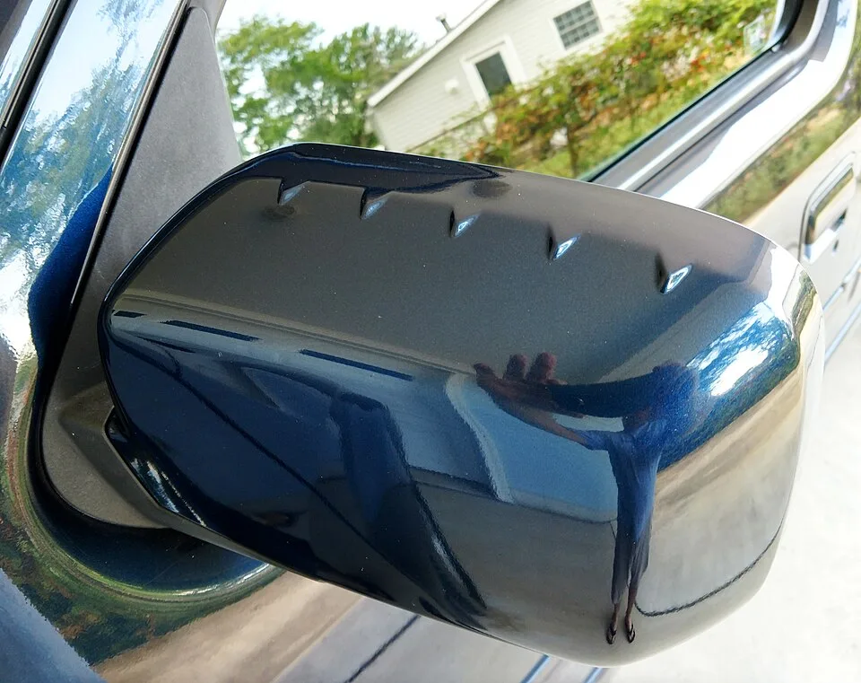
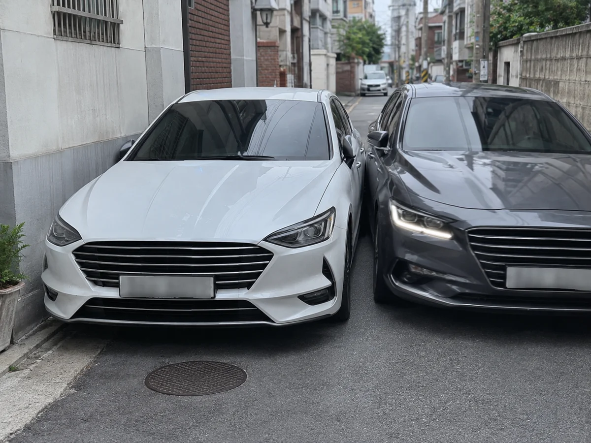
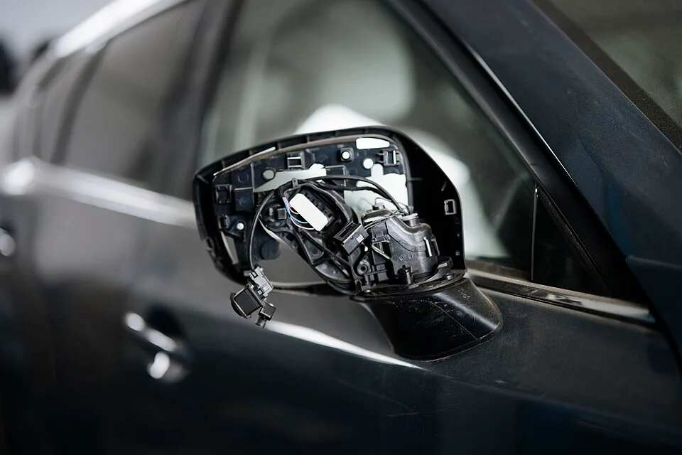

▲ 성에가 낀 사이드미러는 뒷유리 열선 버튼 하나로 대부분 해결된다 ⓒ CarPrism (AI 생성 이미지)
비 오는 날 사이드미러에 물방울이 잔뜩 맺혀 옆 차선이 잘 안 보이는데, 계기판 어디를 봐도 "사이드미러 열선"이라는 버튼이 없다. 없는 게 아니라, 대부분의 차량에서는 뒷유리 열선 버튼 하나가 사이드미러 열선까지 함께 작동시키도록 설계돼 있기 때문이다.
여기에 자동 폴딩(접힘) 기능까지 더하면, 좁은 골목 주차나 자동세차 중 사이드미러가 깨지는 사고를 상당수 막을 수 있다. 두 기능을 제대로 쓰는 법과, 그래도 파손됐을 때 대처법을 정리했다.
1. 사이드미러 열선, 어떻게 작동하나 — 뒷유리 열선과 한 몸
사이드미러 열선은 별도 스위치가 있는 경우보다, 뒷유리 열선(리어 디포거) 버튼과 함께 켜지는 경우가 훨씬 많다. 뒷유리에 새겨진 가는 열선 필름과 마찬가지로, 사이드미러 안쪽에도 얇은 발열 필름이나 니크롬선이 들어 있어 전류가 흐르면 열이 발생해 표면의 습기·성에를 녹이는 방식이다.
| 방식 | 원리 |
|---|---|
| 열선 인쇄(실버 페이스트) 방식 | 유리 표면에 은 성분 열선을 인쇄해 융착한 방식 — 전류가 흐르면 표면 전체가 고르게 데워짐 |
| 내장 니크롬선 방식 | 거울 뒷면에 가는 열선을 심어 열을 전달 — 김서림·서리를 안쪽에서부터 녹임 |
📍 왜 사이드미러 전용 버튼이 따로 없을까
제조사 입장에서 사이드미러 김서림은 뒷유리 김서림과 발생 조건이 거의 같다(습도·온도차로 인한 결로). 그래서 스위치를 따로 두기보다 뒷유리 열선 회로에 사이드미러를 병렬로 연결해 버튼 하나로 앞뒤 시야를 동시에 확보하도록 설계하는 경우가 대부분이다. 볼보처럼 오너스 매뉴얼에 "뒷유리 및 사이드미러 열선"을 한 항목으로 안내하는 브랜드도 있다.

▲ 사이드미러 표면 안쪽에는 뒷유리와 같은 방식의 열선 필름이 들어 있는 경우가 많다 ⓒ Wikimedia Commons
자동차 유리 열선의 발열 원리는 아래 글에서 좀 더 자세히 확인할 수 있다. 자동차 열선의 원리 바로가기
2. 언제, 얼마나 켜야 할까 — 사용 타이밍과 배터리 소모
열선은 무작정 오래 켜둔다고 좋은 게 아니다. 김서림이나 얇은 성에라면 5~10분 정도면 충분히 녹는다. 시야가 깨끗해졌는데도 계속 켜두면 불필요하게 전력만 소모하게 된다.
✅ 사이드미러 열선 사용 체크리스트
· 습기·가벼운 서리: 뒷유리 열선 버튼 On → 5~10분 후 상태 확인 후 Off
· 두꺼운 얼음(결빙): 열선만으로는 시간이 오래 걸릴 수 있어 워셔액·스크래퍼 병행 권장
· 시동 직후: 배터리·발전기 부하가 큰 구간이므로, 히터·열선을 동시에 켜면 초기 연비·전압에 영향을 줄 수 있음
· 정차 중 장시간 사용은 배터리 방전 우려가 있으므로 주행 중 사용을 우선할 것
📍 열선을 켜면 연비가 오른다?
정확히는 "연비가 오른다"기보다, 사이드미러 시야 확보를 열선 대신 서행이나 창문을 내려 손으로 닦는 방식으로 해결하려다 보면 오히려 주행 흐름이 끊기고 비효율적이라는 의미에 가깝다. 짧게 켰다 끄는 습관이 배터리 부담과 시야 확보 사이의 균형점이다.
3. 자동 폴딩 기능, 언제 유용한가
사이드미러 파손의 상당수는 좁은 도로·주차 공간에서 지나가는 차량이나 벽에 미러가 부딪히면서 발생한다. 자동(전동) 폴딩 기능은 이런 상황에서 미러를 미리 접어 충격 자체를 피하게 해준다.
| 상황 | 활용법 |
|---|---|
| 좁은 골목·이면도로 주차 | 맞은편 차량·보행자와의 접촉 위험을 줄이기 위해 접어둠 |
| 자동 세차 | 세차기 브러시·롤러에 미러가 걸리는 것을 방지 — 대부분 매뉴얼에서 필수로 안내 |
| 도어락 연동(웰컴 미러) | 스마트키로 문을 잠그면 자동으로 접히고, 잠금 해제 시 펼쳐짐 |
| 도난·파손 노출 최소화 | 혼잡한 주차장에 장시간 세워둘 때 미러를 접어 돌출 부위를 줄임 |

▲ 폭이 좁은 골목이나 주차공간에서는 사이드미러끼리 부딪히기 쉬워 접어두는 것이 안전하다 ⓒ CarPrism (AI 생성 이미지)
✅ 수동 폴딩 vs 자동(전동) 폴딩
· 수동 폴딩: 손으로 직접 밀어 접는 구조 — 저가형 차량, 복원력이 약해 자주 접으면 헐거워질 수 있음
· 전동(파워) 폴딩: 운전석 스위치나 스마트키 조작으로 모터가 접고 펴줌 — 대부분 도어 잠금과 연동한 자동 접힘(락 폴딩) 설정 가능
· 차량 설정(계기판·인포테인먼트 메뉴)에서 웰컴 미러 기능 On/Off를 직접 선택할 수 있는 차종이 많으니 확인해볼 것
차종별 자동 접힘/펴짐 기능 설정 방법은 제조사 오너스매뉴얼에서 확인할 수 있다. 아웃사이드 미러 자동 접힘 설정 바로가기
4. 그래도 파손·도난됐다면 — 대처법과 대략적인 수리비용
아무리 조심해도 사이드미러는 차량 외장 부품 중 접촉 사고에 가장 취약한 부위다. 파손 범위에 따라 수리비용은 크게 달라진다.

▲ 전동 폴딩·열선 배선까지 포함된 사이드미러는 파손 부위에 따라 수리비 차이가 크다 ⓒ Wikimedia Commons
| 파손 유형 | 대략적인 비용 |
|---|---|
| 거울(글라스)만 파손 | 부품 2~3만 원 + 공임 약간 |
| 하우징(커버)만 파손 | 부품 1~4만 원 + 공임 3~5만 원 수준 |
| 미러 어셈블리 통째 교체 | 부품 35~40만 원 안팎 + 공임, 총 60만 원 내외까지 가능 |
| 어라운드뷰·열선·폴딩 모터 등 옵션 포함 | 수십만 원 추가, 최대 70만 원 안팎까지 상승 가능 |
✅ 파손·도난 시 대처 순서
· 사진·블랙박스 영상 확보 — 뺑소니·주차 중 파손은 현장 기록이 핵심 증거
· 가해차량 확인 시 상대방 보험사에 물피 접수, 본인 과실 없는 파손은 자기부담금 없이 처리되는 경우가 많음
· 가해자 불명(도난·뺑소니)이라면 자차보험(자기차량손해) 처리 가능 여부 확인, 단 자기부담금·할증 여부 비교
· 단순 커버·거울 파손은 중고 부품·부분 교체로 비용을 크게 줄일 수 있음
사이드미러 교체 비용과 절차는 아래에서 더 자세히 확인할 수 있다. 사이드미러 교체 비용 안내 바로가기
5. 요즘 신차의 사이드미러 — 경고등부터 카메라형 미러까지
사이드미러는 더 이상 단순한 거울이 아니다. 후측방 경고(BSD) LED가 내장되는 것은 이제 기본에 가깝고, 일부 차종은 아예 거울 대신 카메라와 모니터로 대체한 디지털 사이드미러(DSM)를 채택하고 있다.
📍 디지털 사이드미러(DSM), 무엇이 다른가
거울 대신 카메라로 촬영한 후측방 영상을 실내 모니터(A필러 안쪽 등)에 표시하는 방식이다. 물리적 거울보다 사각지대가 줄고, 야간·우천 시에도 화질 보정으로 시인성을 높일 수 있다는 장점이 있다. 국내에서는 아이오닉 5 등 일부 모델에 적용된 바 있으며, 상용차(대형 트럭) 분야에서도 도입이 확산되는 추세다.
✅ 최근 사이드미러에 결합되는 첨단 기능
· 후측방 경고(BSD, Blind Spot Detection) — 사각지대에 차량이 감지되면 미러 하단부에 경고등 점등
· 턴시그널 리피터 일체형 — 미러에 방향지시등을 내장해 측면 시인성 강화
· 메모리 시트 연동 미러 각도 저장 — 운전자별 각도를 자동 조정
· 디지털 사이드미러(카메라 모니터형) — 일부 신차·상용차에 옵션 또는 기본 적용
디지털 사이드미러 기술에 대한 배경은 아래 기사에서 좀 더 살펴볼 수 있다. 디지털 사이드 미러(DSM) 소개 바로가기
6. 요약
사이드미러 열선은 대부분 뒷유리 열선 버튼과 함께 작동한다. 김서림·성에는 5~10분이면 대부분 제거되므로, 다 녹으면 꺼서 배터리 부담을 줄이는 것이 좋다. 자동 폴딩 기능은 좁은 골목 주차, 자동세차, 도어락 연동(웰컴 미러) 상황에서 미러 파손을 예방하는 데 유용하다.
그래도 파손이나 도난이 발생했다면 파손 범위(거울·커버·어셈블리)에 따라 수리비가 수만 원에서 수십만 원까지 벌어지므로, 현장 기록을 남기고 보험 처리와 부분 교체 여부를 함께 검토하는 것이 비용을 줄이는 방법이다. 최근 신차는 후측방 경고등, 디지털 사이드미러 등 첨단 기능이 결합되며 사이드미러의 역할 자체가 확장되고 있다.